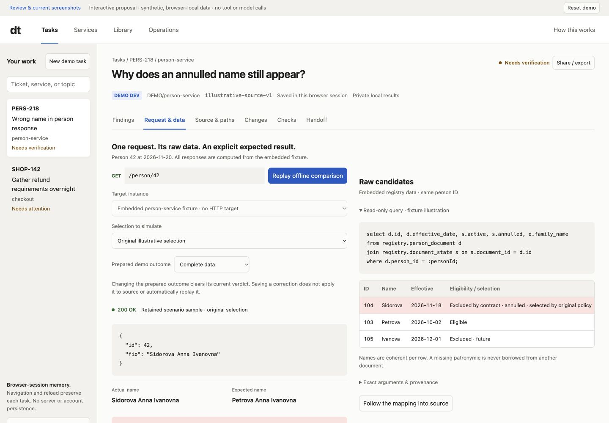
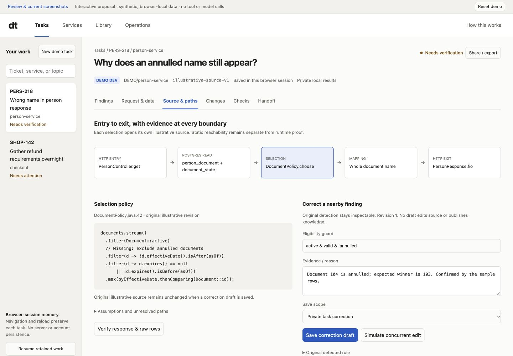
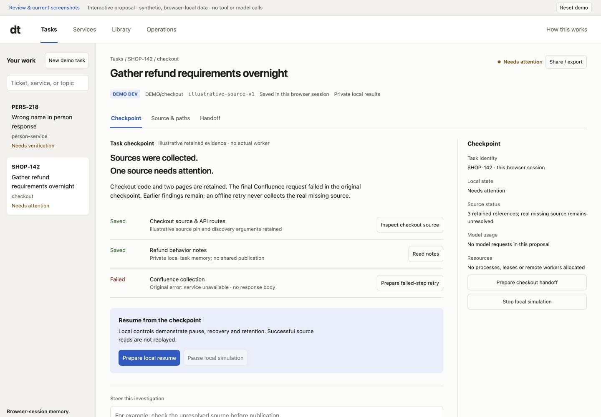

Explain a wrong API response
Response beside raw data; an independent assertion distinguishes HTTP success from a correct mapping.
The revised direction uses a minimal task conversation, optional Files and Background drawers, and nested source lists. Try the conversation prototype, grounded in the executable intent model. Current screenshots come from the app at 5a8ba08 using a disposable environment. Proposed screens use an illustrative person-name investigation.

Response beside raw data; an independent assertion distinguishes HTTP success from a correct mapping.

One narrow source question, its assumptions and an editable draft. Original evidence stays inspectable.

The checkpoint explains retained successes, the blocker and a safe next action before raw lifecycle records.
Full-page captures show density and scroll cost. Viewport captures show what a user sees first. Current-app fixtures and proposal scenarios are explicitly distinguished.
Visual and source inspection identify friction; they do not replace a usability study. Missing integrations, permissions, long-running jobs and unusual content need explicit fixtures. The coverage ledger records these gaps rather than presenting one screenshot as every possible state.